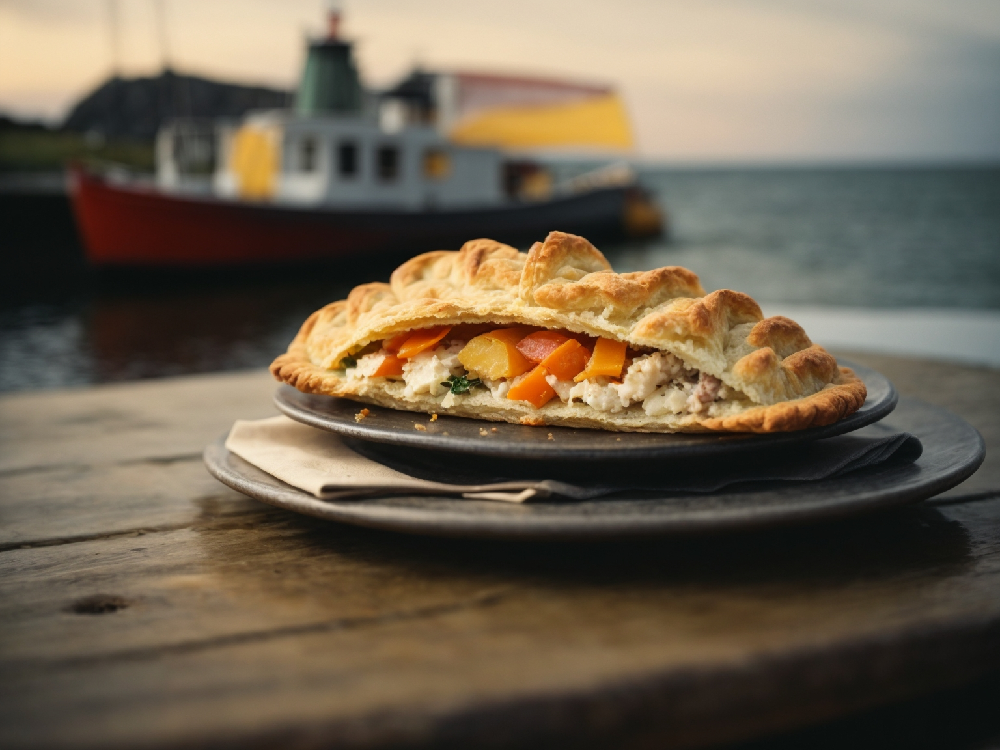

Recipes
Traditional Cornish Pasty

Beef and Stilton Pasty

Mexican Cornish Pasty

Seafood Cornish Pasty
Traditional Cornish Pasty
Ingredients:
- 500g (4 cups) all-purpose flour
- 125g (1/2 cup) unsalted butter, cold and diced
- 125g (1/2 cup) lard or vegetable shortening, cold and diced
- Pinch of salt
- Cold water (about 150ml or as needed)
- 350g (12 oz) beef skirt, diced
- 2 large potatoes, peeled and diced
- 1 large onion, finely chopped
- 1 small rutabaga (swede), peeled and diced
- Salt and black pepper to taste
- Optional: a knob of butter for each pasty
Instructions:
- Prepare the Pastry: In a large mixing bowl, combine the flour, diced butter, diced lard, and a pinch of salt. Use your fingertips to rub the fat into the flour until it resembles breadcrumbs. Gradually add cold water, a little at a time, and mix until the dough comes together. Be careful not to make it too wet. Form the dough into a ball, wrap it in cling film, and refrigerate for at least 30 minutes.
- Prepare the Filling: In a large bowl, mix together the diced beef, potatoes, onion, and rutabaga. Season the filling with salt and black pepper, ensuring it's well combined.
- Preheat the Oven: Preheat your oven to 200°C (400°F) or 180°C (350°F) for a fan oven.
- Assemble the Pasties: Divide the pastry into equal portions, depending on how large you want your pasties. Roll out each portion into a circle of about 20-25 cm (8-10 inches) in diameter. Place a generous portion of the filling on one half of each pastry circle, leaving a border around the edge. Optionally, add a small knob of butter on top of the filling.
- Seal the Pasties: Fold the pastry over the filling to create a semi-circle. Press the edges firmly together, and then crimp to seal. Traditional crimping involves folding and pinching the pastry along the edge to create a rope-like pattern.
- Bake: Place the pasties on a baking sheet lined with parchment paper. Beat an egg and brush it over the pasties to give them a golden color when baked. Bake in the preheated oven for about 45-50 minutes or until the pasties are golden brown and cooked through.
- Serve: Allow the pasties to cool slightly before serving.
Beef and Stilton Pasty
Ingredients:
- 2 sheets of ready-made shortcrust pastry
- 1 pound (450g) beef steak, diced into small cubes
- 1 onion, finely chopped
- 1-2 cloves of garlic, minced
- 1 cup mushrooms, sliced
- 1/2 cup crumbled Stilton cheese
- 1 tablespoon Worcestershire sauce
- 1 tablespoon tomato paste
- Salt and pepper to taste
- Olive oil for cooking
- Egg wash (1 egg beaten with a splash of water)
Instructions:
- Preheat the Oven: Preheat your oven to 375°F (190°C) and line a baking sheet with parchment paper.
- Prepare the Filling: Heat a drizzle of olive oil in a pan over medium heat. Add the diced beef and cook until browned on all sides. Remove the beef from the pan and set it aside.
- Saute Vegetables: In the same pan, add a bit more oil if needed. Saute the chopped onions until they turn translucent. Add the minced garlic and sliced mushrooms, and cook until the mushrooms are tender.
- Combine Ingredients: Return the cooked beef to the pan with the onions and mushrooms. Stir in the Worcestershire sauce, tomato paste, and season with salt and pepper. Allow the mixture to simmer for a few minutes, then remove it from heat. Let it cool slightly.
- Prepare Pastry: Roll out the shortcrust pastry sheets on a floured surface. Using a large circular cutter or plate, cut out circles from the pastry sheets (around 5-6 inches in diameter).
- Fill the Pasties: Place a spoonful of the beef and vegetable mixture onto one half of each pastry circle. Sprinkle a generous amount of crumbled Stilton cheese over the filling.
- Fold and Seal: Fold the pastry over the filling to create a semi-circle shape. Press the edges firmly together to seal. You can crimp the edges with a fork to ensure they are tightly sealed.
- Egg Wash: Place the prepared pasties on the lined baking sheet. Brush the tops of the pasties with the egg wash to give them a golden brown color when baked.
- Bake: Put the baking sheet in the preheated oven and bake for approximately 20-25 minutes or until the pasties turn golden brown and crisp.
- Serve: Once baked, remove the pasties from the oven and let them cool slightly before serving. Enjoy these delicious Beef and Stilton pasties warm or at room temperature.
Mexican Cornish Pasty
Ingredients:
- 2 sheets of store-bought puff pastry
- 1 cup cooked and shredded chicken
- 1 cup cooked black beans
- 1 cup corn kernels
- 1 cup diced tomatoes
- 1/2 cup diced bell peppers (red, green, or yellow)
- 1/2 cup diced onions
- 1 teaspoon chili powder
- 1 teaspoon ground cumin
- 1/2 teaspoon paprika
- Salt and pepper to taste
- Egg wash (1 egg beaten with a splash of water)
Instructions:
- Preheat the Oven: Preheat your oven to 375°F (190°C) and line a baking sheet with parchment paper.
- Prepare the Filling: In a mixing bowl, combine the shredded chicken, black beans, corn, diced tomatoes, bell peppers, onions, chili powder, cumin, paprika, salt, and pepper. Mix well until all ingredients are evenly combined and seasoned.
- Prepare the Pastry: Roll out the puff pastry sheets on a lightly floured surface. Using a large circular cutter or a plate as a guide, cut out circles from the pastry sheets (aim for around 5-6 inches in diameter).
- Fill the Pasties: Place a generous spoonful of the Mexican filling mixture onto one half of each pastry circle, leaving some space around the edges. Be careful not to overfill to avoid difficulty sealing the pasties.
- Fold and Seal: Fold the pastry over the filling to create a semi-circle shape. Press the edges firmly together to seal. You can crimp the edges with a fork to ensure they are tightly sealed.
- Egg Wash: Place the prepared pasties on the lined baking sheet. Brush the tops of the pasties with the egg wash to give them a golden brown color when baked.
- Bake: Place the baking sheet in the preheated oven and bake for approximately 20-25 minutes or until the pasties turn golden brown and crisp.
- Serve: Once baked, remove the pasties from the oven and let them cool slightly before serving. They can be enjoyed warm or at room temperature.
Seafood Cornish Pasty
Ingredients:
- 500g (4 cups) all-purpose flour
- 125g (1/2 cup) unsalted butter, cold and diced
- 125g (1/2 cup) lard or vegetable shortening, cold and diced
- Pinch of salt
- Cold water (about 150ml or as needed)
- 300g (about 10 oz) mixed seafood (e.g., shrimp, scallops, white fish), cleaned and chopped
- 2 large potatoes, peeled and diced
- 1 leek, cleaned and sliced
- 1 small fennel bulb, finely chopped
- 1/2 cup frozen peas
- Zest of 1 lemon
- 2 tablespoons fresh parsley, chopped
- Salt and black pepper to taste
- 2 tablespoons olive oil
For the creamy sauce:
- 2 tablespoons unsalted butter
- 2 tablespoons all-purpose flour
- 1 cup milk
- Salt and black pepper to taste
Instructions:
- Prepare the Pastry: In a large mixing bowl, combine the flour, diced butter, diced lard, and a pinch of salt. Use your fingertips to rub the fat into the flour until it resembles breadcrumbs. Gradually add cold water, a little at a time, and mix until the dough comes together. Be careful not to make it too wet. Form the dough into a ball, wrap it in cling film, and refrigerate for at least 30 minutes.
- Prepare the Seafood Filling: In a large mixing bowl, combine the chopped seafood, diced potatoes, sliced leek, chopped fennel, frozen peas, lemon zest, and chopped parsley. Season the filling with salt and black pepper, and toss the ingredients until well combined.
- Prepare the Creamy Sauce: In a saucepan, melt 2 tablespoons of butter over medium heat. Stir in 2 tablespoons of flour to create a roux. Gradually whisk in the milk, stirring continuously until the sauce thickens. Season the sauce with salt and black pepper to taste.
- Assemble the Seafood Pasty: Preheat your oven to 200°C (400°F) or 180°C (350°F) for a fan oven. Roll out the pastry on a floured surface and cut it into circles of your desired size. Place a portion of the seafood filling on one half of each pastry circle. Spoon a little of the creamy sauce over the seafood filling.
- Seal and Bake: Fold the pastry over the filling to create a semi-circle. Press the edges firmly together and crimp to seal. Place the pasties on a baking sheet lined with parchment paper. Bake in the preheated oven for about 25-30 minutes or until the pasties are golden brown and cooked through.
- Serve: Allow the seafood pasties to cool slightly before serving.